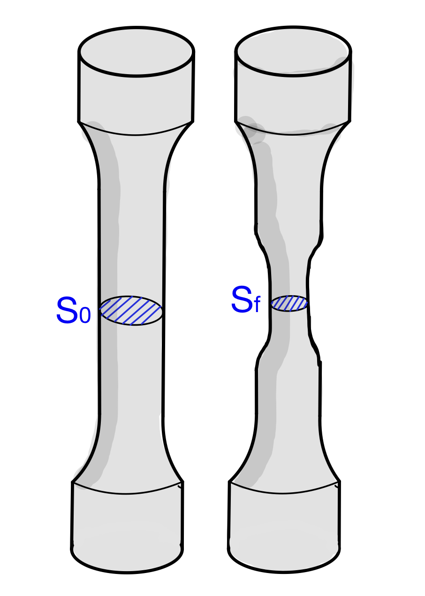

El ensayo de tracción consiste en someter a una probeta normalizada a un esfuerzo de tracción creciente y determinar el alargamiento que sufre hasta que se produce su rotura. Se cuantifica en todo momento la tensión aplicada y la deformación producida.
Este ensayo se realiza con una máquina que cuenta con dos mordazas donde se anclan los extremos de la probeta. Durante el ensayo, la máquina va aplicando una fuerza de tracción cada vez mayor y va generando una gráfica donde se puede ver el alargamiento que sufre la probeta frente al esfuerzo que está soportando. Por lo tanto, los dos parámetros fundamentales en este ensayo son:
Tensión (σ): es el cociente entre la fuerza aplicada sobre la probeta (F) y el área de su sección transversal inicial (S0). Se puede expresar en pascales (1 Pa = 1 N/m2), en kp/cm2 o en kp/mm2.
\[\sigma =\frac{F}{S_{0}}\]
Deformación o alargamiento unitario (ε): es el alargamiento que experimenta la probeta (Δl) respecto a su longitud inicial (l0), debido a la aplicación de la fuerza. Se puede expresar en tanto por uno o tanto por ciento (multiplicándolo por 100).
Se usan la tensión y la deformación unitaria en lugar de la fuerza (carga) y el alargamiento, para que el ensayo no dependa de las dimensiones de la probeta.
Diagrama tensión-deformación
A medida que se realiza el ensayo, la máquina va dibujando una gráfica donde se representan la tensión sufrida por el material (σ) en el eje vertical y la deformación unitaria de la probeta (ε) en el horizontal. Esa gráfica, para la mayoría de materiales, tiene la siguiente forma:
Elaboración propia. Diagrama de tracción genérico(CC BY-SA)
A la vista del diagrama, podemos considerar diferentes zonas:
Zona elástica (OE)
En esta zona el material tiene un comportamiento elástico. Si el esfuerzo cesara, el material recuperaría su forma original. Dentro de esta zona podemos distinguir:
Zona proporcional (OP): en esta zona la gráfica es un línea recta, por lo que las deformaciones son proporcionales a la tensión que las produce. Podemos escribir la ecuación de esa recta sabiendo que pasa por el origen y llamando "E" a la pendiente de la misma, con lo que tendríamos:
\[\sigma =E\cdot \varepsilon\]
Esta fórmula no es más que la Ley de Hooke aplicada a la probeta, que nos dice que la deformación producida es proporcional a la fuerza aplicada.
La pendiente de la recta (E) se denomina módulo elástico o módulo de Young y es característica del material ensayado.
Zona elástica no proporcional (PE):en esta zona el material sigue teniendo comportamiento elástico, pero la gráfica ya no es una línea recta sino que se curva. Por lo tanto, aquí no se puede aplicar ya la ley de Hooke.
El punto final de esta zona está caracterizado por el valor de tensión denominado Límite Elástico, que se puede nombrar como LE, σE o σy.
Hay que tener en cuenta que los puntos P y E están muy cercanos por lo que, en ocasiones, se consideran el mismo. Si no tenemos información sobre el valor exacto de la tensión en P, podemos considerar que la zona proporcional llega hasta el límite elástico. En ese caso, siempre que la tensión sea inferior a σE, se podrá aplicar la ley de Hooke.
Zona plástica (ES)
En toda esta zona el material tiene un comportamiento plástico, por lo que las deformaciones ya son permanentes. Podemos distinguir:
Zona de deformación plástica uniforme (ER):en esta zona el material sufre cada vez mayores deformaciones al aumentar la tensión. Se observa que la gráfica alcanza un máximo en el punto R. Esto no significa que la tensión en el material baje a partir de este punto. Lo que ocurre es que la sección de la probeta sufre un fenómeno conocido como estricción, que consiste en que aparece un adelgazamiento en su zona central.

Elaboración propia. Estricción(CC BY-SA)
Las tensiones siguen aumentando en el material pero, como estamos representando σ, que se se calcula dividiendo la carga entre la sección inicial (que es mayor que la sección que tiene ahora la probeta), nos da un valor menor que el realmente sufrido por el material. Digamos que, al tener menos sección, hay menos material y la probeta ofrece menor resistencia a la máquina por lo que la carga disminuye. La estricción (Z) de la probeta que se produce en esta zona puede calcularse de manera relativa como el porcentaje de sección inicial que ha disminuido. En concreto, la fórmula para calcular la estricción es la siguiente:
\[Z =\frac{S_{0}-S_{f}}{S_{0}}\cdot 100\]
La tensión máxima en el punto R es otra propiedad importante obtenida en este ensayo. Se denomina resistencia a la traccióndel material y se puede denotar por σR o UTS (Ultimate Tensile Strength).
Aunque aún no se ha producido la fractura completa del material, se considera que ya está roto y no puede soportar más tensión, por eso a σR también se le puede llamar tensión de rotura.
Zona de rotura (RS): en esta zona el material cede ya completamente hasta que se produce la rotura completa de la probeta en dos trozos.
Aquí se pude ver un vídeo que resume lo explicado en esta sección y puede ser útil para repasar y afianzar conceptos:
Elaboración propia. Diagrama tensión deformación de un acero(CC BY-SA)
Se observa que aparece una zona de fluenciapoco después del límite elástico, en la que el material sufre una gran deformación sin que aumente prácticamente nada la tensión soportada.
En este vídeo se puede ver un ensayo de tracción con una barra de acero:
En este otro vídeo se usa una máquina universal de ensayos estáticos y se muestran detalles interesantes sobre la preparación y el desarrollo del ensayo.
La tensión máxima de trabajo (σt)es la máxima que debe soportar una pieza para que el material trabaje en condiciones de máxima seguridad. Está establecida por la normativa y debe asegurar que:
El material no debe sufrir deformaciones plásticas.
El material debe trabajar en la zona elástica de proporcionalidad, cumpliendo la ley de Hooke.
Se debe contar con un margen de seguridad, por posible aparición de fuerzas imprevistas.
Normalmente se calcula a partir de la tensión de rotura, aplicando un coeficiente de seguridad (CS):
\[\sigma _{t}=\frac{\sigma _{R}}{C_{S}}\]
El coeficiente de seguridad es un número que establecerá la normativa y que dependerá tanto del material como del uso al que esté destinada la pieza.
Ejercicios de ensayos de tracción
Aquí tenéis una colección de ejercicios de ensayos de tracción para practicar.
{kind=link}
{kind=link}